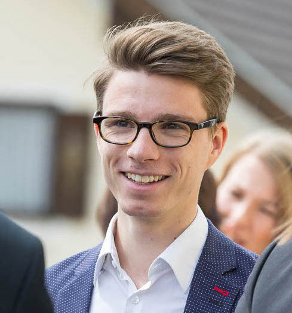
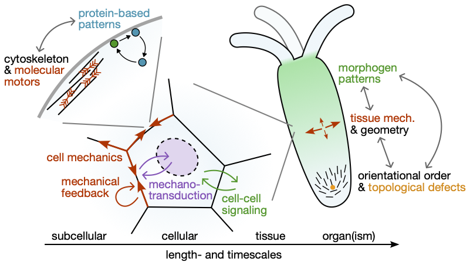

Fridtjof Brauns

PostDoc Fellow at the Kavli Institute for Theoretical Phyisics, University of California, Santa Barbara.
Contact: fbrauns [at] kitp.ucsb.edu
Resarch Interests
I am broadly interested in self-organization in living systems: How does biology control and harness physical instabilities? How does geometry emerge from genes during development? Addressing these questions requires briding the scales from cells to tissues and organs. I use concepts and ideas from theoretical physics, dynamical systems, and geometry, working in close collaboration with experimentalists.

Morphogenesis
- Cell and tissue mechanics
- Where and how is shape encoded? (Top-down genetic control vs bottom-up self-organization)
- Patterning of morphogenetic anisotropy fields
Non-reciprocal pattern formation
- Non-reciprocal Cahn-Hilliard equation
- Can the lens of non-reciprocal interactions provide a new unifying understanding of far-from-equilibrium pattern formation
- What are the principles of nonlinear pattern selection?
Protein patterns and mass-conserving reaction–diffusion systems
- Generalize phase-portrait analysis to spatially extended systems
- Coarsening and pattern selection
- Intracellular pattern formation and evolution of the underlying protein interaction networks
Selected Publications
-
A Mean-Field Model for Active Plastic Flow of Epithelial Tissue
N. H. Claussen, FB -
A Geometric Tension Dynamics Model of Epithelial Convergent Extension
N. H. Claussen*, FB*, B. I. Shraiman -
The Geometric Basis of Epithelial Convergent Extension
FB*, N. H. Claussen*, E. F. Wieschaus, B. I. Shraiman -
Nonreciprocal pattern formation of conserved fields
FB and M. Cristina MarchettiVideos: YouTube -
Patterning of morphogenetic anisotropy fields
Z. Wang, M. Cristina Marchetti, and FBVideos: YouTube -
Bulk-surface coupling identifies the mechanistic connection between Min-protein patterns in vivo and in vitro
FB*, G. Pawlik*, J. Halatek*, J. Kerssemakers E. Frey, and C. Dekker -
Phase-space geometry of mass-conserving reaction–diffusion dynamics
FB*, J. Halatek*, and E. Frey -
Self-organization principles of intracellular pattern formation
J. Halatek, FB, and E. Frey
*Equal contributions
For my full publication list, see Google Scholar.
Short CV
| since 2021 | KITP, UC Santa Barbara. Independent PostDoc Fellow.
Work on cell and tissue mechanics during morphogenesis (with with Boris Shraiman) and on non-reciprocal pattern formation (with Cristina Marchetti). Collaborations with Andreas Bausch (TU Munich), Zvonimir Dogic (UCSB), Neil Lin (UCLA), Adrienne Roeder (Cornell), Sebastian Streichan (UCSB), Eric Wieschaus (Princeton) |
| 2015 – 2021 | LMU Munich. PhD student with Erwin Frey.
Thesis: Principles and theory and of intracellular pattern formation |
| 2010 – 2015 | LMU Munich. BSc (Physics) and MSc (Theoretical and Mathematical Physics) |